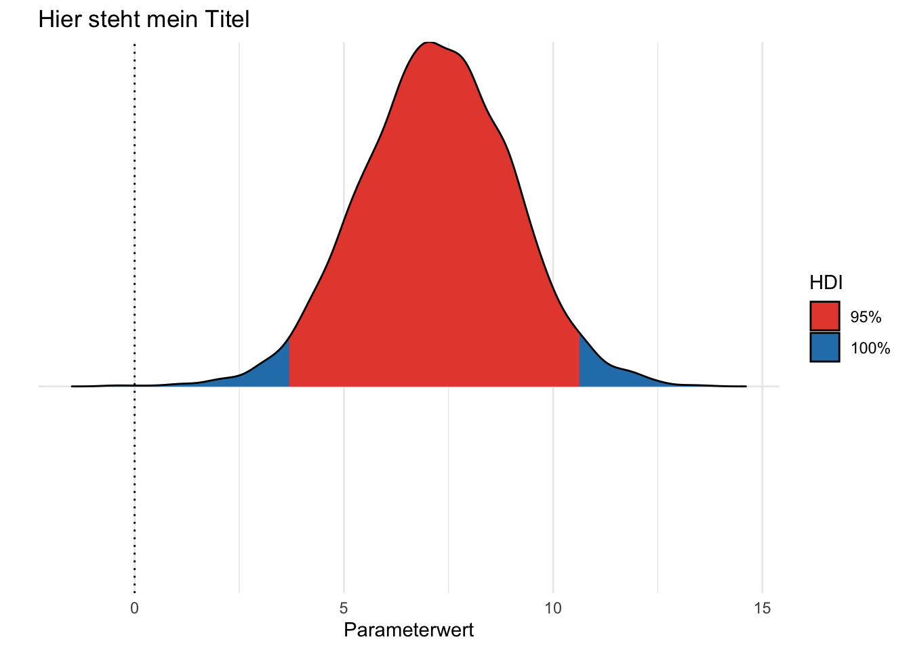

13 Auswerten: Berichten von Statistiken
13.1 Lernsteuerung
13.1.1 Lernziele
- Sie können Ihre Forschungfrage mit Methoden der Inferenzstatistik nach Bayes auswerten.
13.1.2 Position im Lernpfad
Sie befinden sich im Abschnitt “Auswertung” in Abbildung 1.2.
13.1.3 tl;dr
In diesem Kapitel wird folgende Frage beantwortet: “Wie man die Ergebnisse einer Bayes-Analyse berichtet”
13.1.4 Benötigte R-Pakete
13.2 Warum das Berichten (Ihrer Analyse) wichtig ist
Statistische Analysen können komplex und schwierig zu verstehen sein.1 Die Versuchung ist daher immer gegeben, beim Berichten einer Analyse wichtige Aspekte unerwähnt oder unerklärt zu lassen. Lässt man aber wichtige Informationen aus, steigt die Gefahr, dass die Analyse nicht nachvollziehbar ist. Am schönsten ist dieses Problem im Cartoon mit den zwei Wissenschaftlern von einer Tafel (von Sidney Harris) dargestellt.
Stellen Sie sicher, dass Ihre Analyse nachvollziehbar ist. Andere Personen sollten Ihre Analyse auch ausführen können. Daher ist es wichtig, dass Sie Ihre Analyse zu Ihrer Studie einreichen (außerdem auch die Daten und Ihr Data-Dictionary).\(\square\)
13.3 Prinzipien der Berichtlegung (von Bayes-Statistik)
Im Folgenden sind einige Grundlagen des Berichtens von Statistiken dargestellt. Zwar wird in einigen Teilen auf die Bayes-Methode abgestellt, aber viele Teile gelten für alle statistischen Analysen. Dabei sei hinzugefügt, dass Statistik, so nüchtern sie den geneigten Studenis auch erscheinen mag, durchaus Eitel- und Partikularitäten aufweist: Nicht jeder Autor oder Dozent oder jede Richtlinie gibt die gleichen Anweisungen oder Empfehlungen! Die folgenden Hinweise entsprechen der (aktuellen, sich durchaus im Lauf der Zeit ändernden) Sicht dieses Dozenten.
Das erste Prinzip des Berichtlegens lautet “so viel wie nötig, aber so wenig wie möglich”. Man will die Lesis nicht überfrachten, aber alle nötigen Informationen übermitteln. Das zweite Prinzip lautet, dass man die Informationen am rechten Ort vermittelt. So wird ei Lesi die Erklärung der Zusammensetzung der Stichprobe nicht im Diskussionsteil vermuten und sich zu Recht wundern, im Methodenteil nichts zur Stichprobe zu finden. Das dritte Prinzip lautet, dass man priorisiert. Wichtiges in den Hauptteil, Details in den Anhang (bzw. in ergänzende Datein, “supplementary files”). Detaillreiche Statistiken berichtet man eher in Tabellen; geht es um einen Überblick, bietet sich häufig ein Diagramm an. Berichtet man im Text, so schreibt man auf “gut Deutsch” die Aussage in den Satz, und die Zahlen eher in Klammern dahinter. Das vierte Prinzip lautet, konsistent zu sein. Es gibt viele Wege nach Rom, bzw. viele Ansätze, nützlich und effektiv - mithin “richtig” - zu berichten. Wichtiger als die Wahl einer bestimmten Art und Weise, ist es, konsistent zu sein, ähnlich wie beim Zitieren. Das fünfte Prinzip, könnte man sagen, ist so selbstverständlich, dass es keiner Erwähnung bedarfe, aber die Realität lehrt uns leider mitunter das Gegenteil. Es lautet Lauterkeit oder Rechtschaffenheit. Kennzahlen bewusst falsch zu berichten rangiert irgendwo zwischen Straftat und beruflichem Fehlverhalten, je nach Kontext und kann harte Bestrafung verdienen. Gängiger sicherlich sind subtilere Arten, dieses Prinzip zu verletzen. Dazu ist als erstes das selektive Berichten zu nennen: Unliebsame Befunde werden verschwiegen, hypothesenkonforme hingegen nach vorne gestellt. Das ist zwar dann nicht gelogen aber die Irreführung wird bewusst in Kauf genommen.
Die gute Nachricht für alle Studentis: Es gibt für Sie keinen Anreiz, die Ergebnisse “aufzuhübschen” (im Gegensatz zu Berufswissenschaftlis). Ihre Note wird nicht daran gemessen, ob Sie einen neuen Expoplaneten entdecken, oder sonstige “starke” Ergebnisse aufweisen können. Nein! Unklare, nicht-bestätigende oder unerwartete Ergebnisse sind genauso gut - auch wissenschaftlich übrigens haben sie die gleiche Daseinsberechtigung, wie die Ergebnisse, die im “Journal of Flashy Results” für Presseberichte sorgen. Für ihre Note ist es unerheblich, wie “signifikant”, “effektstark”, “präzise” oder “hypothesenkonform” ihre Ergebnisse sind.
Es ist hilfreich, im Sinne des vierten Prinzips (Konsistenz) sich nach einer bekannten, vielleicht sogar verbreiteten Nomenklatur bzw. Vorgehensweise zu richten. Für Bayes-Analysen gibt es dazu Richtlinien und Checklisten; die folgenden Hinweise orientieren sich an Kruschke (2021), genannt BARG (Bayesian Analysis Reporting Guidelines); der Volltext ist hier zugänglich. Auch die APA (American Psychological Assocation) hat eine Checkliste herausgegeben, wie Bayes-Statistik berichtet werden sollte.
Die wichtigsten Ergebnisse der BARG sind in dieser Tabelle ausgelegt. Im folgenden wird eine Auswahl der BARG vorgestellt. Das Ziel ist nicht eine umfassende Darstellung mit einer hohen Tiefe der Exposition. Vielmehr soll - angepasst an den Kenntnissstand von Bachelor-Studentis - ein angemessener Überblick ausgewählt werden. Ambitionierte Studentis sind aufgefordert, breite und tiefer als in der folgenden Ausführtung erläutert, zu berichten. Die folgende Ausführung orientiert sich an der Standardgliederung wissenschaftlicher Berichte.
Lesis seien verwiesen auf das Buch von Jhangiani, Chiang, und Cuttler (2019), die einen hervorragenden Überblick über die Materie vermitteln.
13.4 Allgemeine Richtlinien zum Berichten von Statistik
Die APA hat eine Checkliste bzw. Richtlinie herausgegeben zum Berichten von Statistik (vgl. Cooper 2020). Die lesenswerten Schwesterbüch von Jan Hendrik Peters und Dörfler (2019) bzw. Jan H. Peters und Dörfler (2015) geben nicht nur Formulierungshilfen, sondern erläutern, wie man eine sinnvolle Gliederung erstellt und welche Inhalte in welchem Abschnitt gehören.
Grundlegende Prinzipien des Berichtens von Statistiken sind:
- Begründet: Eine Erläuterung, warum ein Vorgehen gewählt wurde, wird gegeben.
- Nachvollziehbar: Lesis können anhand des Berichts (potenziell) nachvollziehen, wie die Autoren zu einem Ergebnis gelangt sind.
- Von einfach zu komplex: Es ist verbreitet, zunächst grundlegende Ergebnisse, dann komplexere Modellanalysen zu präsentieren.
- Deskriptiv: Ergebnisse werden berichtet, aber nicht bewertet (das kommt erst im Diskussionsteil).
- Lauter: Alle relevanten Ergebnisse werden offengelegt.
13.5 Theorieteil
13.5.1 Testen oder Schätzen?
Am Ende des Theorieteils bietet es sich an, die Hypothesen oder die Forschungsfrage zu spezifizieren. Sie können sich für eines von beiden entscheiden oder auch beides angehen.
In der bisherigen Literatur (in der Psychologie) werden zumeist Hypothesen getestet, nach dem Motto “jo, unsere Vermutung scheint zu stimmen!” oder “nein, das Zeugs taugt nix!”. Das Problem ist, dass solches Denken etwas simpel ist, Schwarz-Weiß eben. Außerdem sind Nullhypothesen streng genommen immer falsch, weswegen es eigentlich keinen Sinn macht, sie zu untersuchen. Aber dafür ist das Schwarz-Weiß-Denken schön einfach.
Parameterschätzung fragt nicht ob, sondern wieviel. Nicht viel komplizierter, aber viel nuancierter; (eigentlich) besser. Außerdem enthält das Parameterschätzen auch das Hypothesentesten: Ist die Null im Schätz-Intervall nicht enthalten, so kann man die Null-Hypothese ausschließen.
13.5.2 Modell definieren
Es bietet sich auch an, ein Modell mit einem Pfaddiagramm bzw. DAG zu visualisieren, z.B. so, s. ?fig-dagmodell1.
#| label: fig-dagmodell1
#| fig-cap: Beispielhafter DAG
library(dagitty)
mein_dag <- 'dag {
A [pos="-2.200,-1.520"]
B [pos="1.400,-1.460"]
D [outcome,pos="1.400,1.621"]
E [exposure,pos="-2.200,1.597"]
Z [pos="-0.300,-0.082"]
A -> E
A -> Z [pos="-0.791,-1.045"]
B -> D
B -> Z [pos="0.680,-0.496"]
E -> D
}'
mein_modell <- "dag{
lern -> erfolg
mot -> erfolg
mot -> lern
}"
plot(graphLayout(mein_modell))
Dabei steht lern für “Lernzeit in Stunden”, mot für “Motivation” und lern für “Lernerfolg”. Die Operationalisierung der Variablen sollten im Methodenteil genauer beschrieben sein.
Übrigens: R-Quellcode sollte nicht im Hauptteil eines wissenschaftlichen Berichts stehen, verbannen Sie ihn in den Anhang (es sei denn, der Quellcode bzw. die Entwicklung von Syntax ist Gegenstand der Arbeit).
Außerdem macht es Sinn, das Modell formal zu spezifizieren, etwa so:
\[ \begin{aligned} \text{erfolg} &\sim N(\mu_i, \sigma) \qquad \text{Likelihood} \\ \mu_i &= \beta_0 + \beta_1 \text{lern} + \beta_2 \text{mot} \qquad \text{lineares Modell} \\ \beta_0 &\sim N(0, 2.5) \qquad \text{Prior Achsenabschnitt} \\ \beta_1 &\sim N(0, 2.5) \qquad \text{Prior Regressiongewicht lern} \\ \beta_2 &\sim N(0, 2.5) \qquad \text{Prior Regressiongewicht mot} \\ \sigma &\sim Exp(1) \qquad \text{Prior Streuung} \\ \end{aligned} \]
Wenn Sie das Modell mit STAN berechnen, also vermittelt über z.B. rstanarm, dann wählt stan_glm() für Sie folgende Priori-Werte:
- \(\beta\)s: Normalverteilt mit Mittelwert 0 und SD 2.5
- \(\sigma\): Exponentialverteilt mit Streckung 1
Die \(\beta\)s sind am einfachsten als z-Werte zu verstehen: Grob übersetzt sagt rstanarm “Mei, ich geh davon aus, dass der Effekt vermutlich 2.5-SD-Einheiten um den Mittelwert rum liegt, könnten auch etwas mehr sein, aber mehr als 5-SD-Einheiten sind schon echt unwahrscheinlich”. Das nennt man einen “schwach informativen Prior”: der erlaubt viel, aber den größten Quatsch schließt er aus.
Praktischerweise müssten sie nicht mal ihre Variablen z-tranformieren (aber Sie können ohne Schaden!), denn rstanarm macht das für Sie.
Tipp: Geben Sie an, dass Sie die Standardwerte (Voreinstellung) der von Ihnen verwendeten Software (wie rstanarm) verwendet haben. Zitieren Sie möglichst die Software (in der verwendeten Version) und reichen Sie die Syntax ein.
Mehr zu Prioris bei rstanarm findet sich hier.
Mit prior_summary(mein_model) bekommt man einen Überblick über die Prioriwerte, die im Modell mein_modell verwendet wurden.
Es macht Sinn, zu begründen, warum sie das Modell so gewählt haben, wie sie es gewählt haben. Wenn Sie eine Normalverteilung für die Priori-Verteilungen wählen, haben Sie Argumentationslinien: epistemologisch und ontologisch. Epistemologisch können Sie argumentieren, dass die Normalverteilung die Entropie maximiert, also die Verteilung mit den wenigsten Vorannahmen ist, wenn man davon ausgeht, dass die gesuchte Verteilung über eine endliche Varianz und einen endlichen Mittelwert verfügt. Ontologisch können Sie argumentieren, dass z.B. Körpergröße (innerhalb eines Geschlechts zumindest) hinreichend normalverteilt ist.
Die Begründung für das lineare Modelle erschließt sich aus der Theorie, nämlich dass z.B. die gewählten UV den gesuchten Effekt gut beschreiben.
13.5.2.1 Kausal- vs. Korrelationsmodell
Sie wollten weiterhin angeben, ob Ihre Forschungsfrage ein kausales Modell annimmt oder ein deskiptives (korrelatives). Bei einem kausalen Modell sollen dann die Pfeile Wirkungsrichtungen, also Ursache-Wirkungs-Beziehungen angeben.
Auch wenn ihre Studie nicht die “Kraft” hat, Kausalbeziehungen (in Gänze) aufzudecken, ist es trotzdem meistens sinnvoll, ein Kausalmodell aufzustellen, da Theorien (und Praxis) meist an Kausalbeziehungen interessiert sind, und an Korrelationsbeziehungen wenig(er).
Viele wissenschaftliche Studien haben ein kausales Erkenntnisziel, nicht ein deskriptives.
13.5.2.2 Hypothesen testen
Das Testen der Hypothese ist eine Umsetzung der Idee, eine Behauptung einer empirisch-rationalen Prüfung zu unterziehen.
Es bietet sich an, eine Hypothese zu wählen, wenn der Stand der Theorie dies erlaubt, idealerweise mehr als nur eine Null-Effekt-Hypothese, etwas \(\beta=0\). Dass nämlich ein Effekt exakt Null ist, erscheint für die meisten Situationen der Sozialwissenschaften reichlich unplausibel.
Sie sollten die Hypothese zuerst als Aussage formulieren, aber danach möglichst mit mathematischen Symbolen präzisieren (“statistische Hypothesen”).
Hier sind Beispiele für statistische Hypothesen:
- \(H: \mu > 0\)
- \(H: \mu = 0\)
- \(H: \mu \ne 0\)
- \(H: \beta > 0\)
- \(H: d > 0\)
- \(H: R^2 > 0\)
Dabei meint \(\beta\) ein Regressiongewicht, \(d\) eine Differenz (zweier Gruppen) und \(R^2\) die erklärte Varianz eines Modells.
\(R^2\) als Kennzahl einer Hypothese ist interessant, weil es Ihnen erlaubt, ein ganzes Modell als Hypothese zu formulieren. Also “Verbundhypothesen” aufzustellen, die mehr als eine oder zwei Variablen umfassen.
Möchten Sie eine Hypothese zu einem Parameter testen, der einen Nullwert beinhaltet, bietet sich das ROPE-Verfahren an, vgl. Kruschke (2018).
13.5.2.3 Parameterschätzung
Bei einer Parameterschätzung formulieren Sie ein Modell, genau wie beim Hypothesen testen, nur eben ohne Hypothesen. Es geht Ihnen dann nicht um die Frage, ob irgend ein Sachverhalt der Fall ist (das ist Hypothesen prüfen). Stattdessen interessieren Sie sich für die Frage, wie sehr etwas der Fall ist:
- “Wie stark ist der Zusammenhang von Lernzeit und Prüfungserfolg?”
- “Um wie viele Sekunden parken Frauen im Schnitt schneller ein als Männer?”
- “Wie groß ist der statistische Effekt eines Sportwagens auf einem männlichen Profilbild beim Online-Dating?”
Auch hier ist es erlaubt und sinnvoll, eine sprachliche Frage, die oft vage ist, schon aufgrund der natürlichen Ambuität der Sprache, mit Hilfe mathematischer Notation zu präzisieren:
- “Der Zusammenhang \(\beta\) ist definiert als das Regressiongewicht der Variable
lernim Modellm1. - “Operationalisiert wurde die Einparkgeschwindigkeit als die Dauer der Durchführung in Sekunden nach Instruktion wie im Abschnitt XYZ beschrieben. Unser Modell (
m1) schätzte den Parameters. - “Der statistische Effekt ist definiert als das Regressiongewicht der experimentellen Bedingung (binäre Variable
group) im Modellm1.
Geben Sie weiter an, welches Intervall Sie berichten, z.B. “Die Parameterschätzungen werden anhand eines 95%-HDI berichtet”.
Auch wenn Sie eine Hypothese testen, sollten Sie Bereichsschätzungen für die Parameter vornehmen, also Schätzbereiche aus der Posteriori-Verteilung berichten.
13.6 Methodenteil
13.6.1 Analyse
13.6.1.1 Bayes erklären
Erklären Sie, warum Sie eine Bayes-Analyse verwenden und nicht eine frequentistische. Eine ehrliche Antwort wäre zwar, “mein Dozent wollte es so, was bleibt mir groß übrig”, aber es gibt (vermutlich?!) auch fachliche Gründe (z.B.: Eine Priori-Annahme zur Wahrscheinlichkeit eines Parameters wird durch Daten zu einer Wahrscheinlichkeit verschoben). Die sollten sie anführen.
Erklären, was eine Bayes-Analyse ist. (Man bekommt Wahrscheinlichkeiten für Hypothesen, was man beim Frequentismus nicht bekommt.)
Führen Sie an, ob Sie an einer Parameterschätzung oder einer Hypothesentestung interessiert sind. Die Parameterschätzung ist oft zu bevorzugen, da informationsreicher.
Bayes-Statistiken sollten Sie im kurz erläutern, da sie vielen Lesis nicht so gut vertraut sein wird.
Sie können z.B. bei Kruschke (2018)” die Grundlagen des ROPE-Konzepts nachlesen. Vielleicht findet sich ja auch in Ihrem Statistik-Skript etwas Passendes?
13.6.1.2 ROPE
Kurz gesagt wird beim ROPE geprüft, welcher Anteil des Posteriori-Intervalls zu einem Bereich “vernachlässigbar kleiner” Parameterwerte bewegt. Die folgende Abbildung illustriert ein Rope für die Forschungsfrage “Wie stark ist der Effekt der Zylinderzahl auf den Spritverbrauch?”; genauer gesagt ist die Posteriori-Verteilung für den (Regressions-)Effekt, \(\beta\), des Parameters cyl gezeigt. Wie man sieht, ist die Posteriori-Verteilung (glockenförmige Verteilung) komplett außerhalb des Bereichs “sehr kleiner” Werte (ROPE; blaues Rechteck rechts). Wir resümieren: “Es ist auszuschließen, dass der Effekt der Variable Zylinder auf den Spritverbrauch praktisch Null (sehr klein) ist”.
Wenn man die Null bzw. den Nullbereich (ROPE) eines Parameters ausschließt, nennt man das Ergebnis bzw. den Effekt auch “signifikant” (leider ein häufig missbrauchter und missverstandener Begriff). Unser Effekt in diesem Beispiel ist also signifikant (nach dieser Definition). Besser ist es aber, wenn Sie den Begriff vermeiden, und stattdessen davon sprechen, dass Sie einen Effekt gefunden haben (oder nicht oder dass eine unklare Ergebnislage vorliegt). Haben Sie einen Effekt gefunden, so heißt das synonym, dass die Nullhypothese ausgeschlossen ist (falsifiziert ist), natürlich immer auf Basis des vorliegenden Modells bzw. der vorliegenden Daten.

13.7 Ergebnisteil
13.7.1 Deskriptive Statistik
13.7.1.1 Was soll ich schreiben?
Bevor Sie die Ergebnisse Ihrer Modellierung zeigen, bietet sich etwas “Aufwärmen” an, vor dem Fußballspiel wärmt man sich ja auch erstmal auf. Dazu bieten sich die deskriptiven Statistiken zu Ihren Daten an.
Häufig wird man ein Maß der zentralen Tendenz (Mittelwert oder Median) sowie ein dazu passendes Streuungsmaß berichten (z.B. SD) berichten. Evtl. kann man ein Maß zur Präzision des Mittelwerts angeben (SE). Bei schiefen Verteilungen greift man meist auf robuste Kennwerte zurück; bei normalverteilten Verteilungen ist Mittelwert und SD die Statistik der Wahl. Die Stichprobengröße sollte klar sein; liegen fehlende Werte vor, so sollte pro Kennzahl jeweils die effektive Stichprobengröße berichtet sein. Ansonsten reicht es, die Stichprobengröße an einer Stelle (im Text) anzuführen.
Gängige statistische Symbole sollen nicht definiert werden, z.B. M, SD, F, t, df, N, n, OR. Andere statistischen Abkürzungen, die weniger gebräuchlich sind, sollten definiert bzw. auf die Definition verwiesen werden, z.B. pd, ROPE.
Formulierungsvorschlag
Der mittlere Achtsamkeits-Wert lag in der Stichprobe bei M = 12.23 (SD = 1.23).
Die Reaktionszeit in der Experimentalbedingung war höher als in der Kontrollbedingung (Experimentalbedingung: M = 2.7, SD = 0.3; Kontrollbedingung: M = 0.1, SD = 0.4).
Es fand sich eine starke Korrelation zwischen Achtsamkeit und Lebenszufriedenheit, r(134) = .42, 95% CI [.32, .52].
Hat man eine größere Zahl an Statistiken, so bietet es sich an, die Ergebnisse nicht im Fließtext, sondern in einer Tabelle zu berichten. Berichtet man Ergebnisse in einer Tabelle, so doppelt man sie nicht im Text.
Eine nützliche Ergänzung ist es, zusätzlich zu den univariaten Statistiken noch Zusammenhangskoeffizienten (Korrelationen) zu berichten.
13.7.1.2 Tabellen mit R
Im folgenden sind Möglichkeiten aufgezeigt, wie Sie Tabellen mit R für Ihren Bericht erstellen können. Bitte behalten Sie im Blick, dass in einem deutschsprachigen Bericht die Variablen- und Kennzahlennamen in deutscher Sprache erscheinen sollten. Auf “technisch” anmutenden Abkürzungen (z.B. mpg_sd) sollten man verzichten zugunsten “sprechenderer” Formulierengen (z.B. SD Spritverbrauch, oder SD MPG, wenn “MPG” in der Fußnote der Tabelle definiert ist). Tabellen sollten für sich selber verständlich sein, ohne Bezug zum Text.
Mit gängigen R-Methoden kann man sich deskriptive Statistiken ausgeben lassen, s. Tabelle 13.1.
mtcars %>%
summarise(mpg_avg = mean(mpg),
mpg_sd = sd(mpg),
cor_mpg_hp = cor(mpg, hp)) %>%
rename(`MW Spritverbrauch` = mpg_avg,
`SD Spritverbrauch`= mpg_sd,
`Korrelation Spritverbrauch mit PS-Zahl` = cor_mpg_hp)Einfache Tabelle mit deskriptiven Statistiken
Alternativ zu selbsterstellten Tabellen kann “Statistik-Fast-Food” konsumieren und lässt sich einen Haufen Zahlen auf einmal ausgeben. R-Pakete wie r_statix, skimr oder easystats helfen dabei, s. als Beispiel Tabelle 13.2.
| Variable | MW | SD | IQR | Range | Schiefe | Kurtosis |
|---|---|---|---|---|---|---|
| mpg | 20.09 | 6.03 | 7.53 | (10.40, 33.90) | 0.67 | -0.02 |
| cyl | 6.19 | 1.79 | 4.00 | (4.00, 8.00) | -0.19 | -1.76 |
| disp | 230.72 | 123.94 | 221.53 | (71.10, 472.00) | 0.42 | -1.07 |
| hp | 146.69 | 68.56 | 84.50 | (52.00, 335.00) | 0.80 | 0.28 |
| drat | 3.60 | 0.53 | 0.84 | (2.76, 4.93) | 0.29 | -0.45 |
| wt | 3.22 | 0.98 | 1.19 | (1.51, 5.42) | 0.47 | 0.42 |
| qsec | 17.85 | 1.79 | 2.02 | (14.50, 22.90) | 0.41 | 0.86 |
| vs | 0.44 | 0.50 | 1.00 | (0.00, 1.00) | 0.26 | -2.06 |
| am | 0.41 | 0.50 | 1.00 | (0.00, 1.00) | 0.40 | -1.97 |
| gear | 3.69 | 0.74 | 1.00 | (3.00, 5.00) | 0.58 | -0.90 |
| carb | 2.81 | 1.62 | 2.00 | (1.00, 8.00) | 1.16 | 2.02 |
Tabellen mit flextable(), gtsummary oder gt() kann man sich eine schicke Tabelle (im HTML-Format) ausgeben lassen, die man dann per Copy-Paste in Word, d.h. den eigene Forschungsbericht, übernehmen kann. s. Tabelle 13.3.
library(gt) # gt wie "grammer of tables"
meine_tab <-
describe_distribution(mtcars) %>%
gt() %>% # erzeugt schicke Tabelle
fmt_number(where(is.numeric), decimals = 2) # Anzahl der Dezimalstellen
meine_tab| Variable | Mean | SD | IQR | Min | Max | Skewness | Kurtosis | n | n_Missing |
|---|---|---|---|---|---|---|---|---|---|
| mpg | 20.09 | 6.03 | 7.53 | 10.40 | 33.90 | 0.67 | −0.02 | 32.00 | 0.00 |
| cyl | 6.19 | 1.79 | 4.00 | 4.00 | 8.00 | −0.19 | −1.76 | 32.00 | 0.00 |
| disp | 230.72 | 123.94 | 221.53 | 71.10 | 472.00 | 0.42 | −1.07 | 32.00 | 0.00 |
| hp | 146.69 | 68.56 | 84.50 | 52.00 | 335.00 | 0.80 | 0.28 | 32.00 | 0.00 |
| drat | 3.60 | 0.53 | 0.84 | 2.76 | 4.93 | 0.29 | −0.45 | 32.00 | 0.00 |
| wt | 3.22 | 0.98 | 1.19 | 1.51 | 5.42 | 0.47 | 0.42 | 32.00 | 0.00 |
| qsec | 17.85 | 1.79 | 2.02 | 14.50 | 22.90 | 0.41 | 0.86 | 32.00 | 0.00 |
| vs | 0.44 | 0.50 | 1.00 | 0.00 | 1.00 | 0.26 | −2.06 | 32.00 | 0.00 |
| am | 0.41 | 0.50 | 1.00 | 0.00 | 1.00 | 0.40 | −1.97 | 32.00 | 0.00 |
| gear | 3.69 | 0.74 | 1.00 | 3.00 | 5.00 | 0.58 | −0.90 | 32.00 | 0.00 |
| carb | 2.81 | 1.62 | 2.00 | 1.00 | 8.00 | 1.16 | 2.02 | 32.00 | 0.00 |
Aus APA-Sicht würde vermutlich MW und SD genüge tun (sofern man von normalverteilten Variablen) ausgeht. Allerdings schadet es auch nicht, zusätzliche Kennwerte anzugeben. Verzichten sollte man aber vermutlih - in diesem Fall - auf die Spalte n_Missing, da die Spalte keine Information birgt.
So sieht eine Tabelle mit gtsummary aus, s. Tabelle 13.4. Hier wird die Häufigkeitsanalyse gezeigt.
| Characteristic | N = 321 |
|---|---|
| mpg | 19.2 (15.4, 22.8) |
| cyl | |
| 4 | 11 (34%) |
| 6 | 7 (22%) |
| 8 | 14 (44%) |
| 1 Median (IQR); n (%) | |
Hier findet sich noch mehr zum Thema Exportieren von Tabellen aus R nach Word.
Eine tidy Korrelationstabelle kann man sich z.B. (mit easystats, aber es gibt mehrere R-Pakete für diesen Zweck) so ausgeben lassen:
| Parameter1 | Parameter2 | r | 95% CI | t(30) | p |
|---|---|---|---|---|---|
| mpg | hp | -0.78 | (-0.89, -0.59) | -6.74 | < .001*** |
| mpg | disp | -0.85 | (-0.92, -0.71) | -8.75 | < .001*** |
| hp | disp | 0.79 | (0.61, 0.89) | 7.08 | < .001*** |
p-value adjustment method: Holm (1979) Observations: 32
Mit print_md erreicht man, dass die Tabelle in schönerem Markdown-Format gedruckt wird. Da Markdown sich problemlos in HTML- oder Word-Format konvertieren lässt, kann man auf diese Art schöner formatierte Tabellen erhalten (als mit dem Standard von describe_distribution and friends). gt ist allerdings schon von Natur aus schön.\(\square\)
Möchte man eine quadratische Korrelationstabelle (was der üblicheren Berichtsform entspricht) kann man das so bekommen:
summary(meine_cor_tab) %>%
gt() %>% # machen wir gleich eine schicke HTML-Tabelle
fmt_number(where(is.numeric), decimals = 2)| Parameter | disp | hp |
|---|---|---|
| mpg | −0.85 | −0.78 |
| hp | 0.79 | NA |
Vergessen Sie nicht, das Tabellen (genau wie Abbildungen) im Text zu referenzieren sind.
13.7.2 Diagramme exportieren
Diagramme, die Sie mit ggplot erstellt haben, können Sie z.B. mit dem Befehl ggsave in eine Datei speichern (z.B. im Format PNG oder PDF).
Interessant könnte für Sie auch das Paket qwraps2 sein, das u.a. einen Formulierungsvorschlag erstellt, wie man Statistiken im Fließtext anführt. Betrachten wir ein Beispiel mit mtcars. Sagen wir, wir möchten den mittleren Spritverbrauch berichten.
Das Zeichen $\\pm$ steht für “Plus-Minus” ± (im Formelmodus). In Word sollten Sie es händisch durch den Glyphen (das Zeichen) “±” ersetzen.2
13.7.3 Inferenzstatistik
Es empfiehlt sich, die Modellgleichung inkl. Prior-Spezifiaktion aufzuführen.
13.7.3.1 Posteriori-Verteilung
Für jede Hypothese müssen Sie die zentralen Ergebnisse berichten. Die Hypothesen beziehen sich auf Populationen, also benötigen wir Inferenzstatistik. In der frequentistischen Statistik finden hier Statistiken wie der p-Wert und das (frequentistische) Konfidenzintervall Verwendung. In einer Bayes-Analyse ist die Posteriori-Verteilung der Dreh- und Angelpunkt der Ergebnisse.
Die Post-Verteilung gibt an, wie wahrscheinlich ein bestimmter Parameterwert jetzt ist, nachdem die Daten bekannt sind.
Ein statistisches Modell wird zumeist mit einem Regressionsmodell umgesetzt. Ein Regressionsmodell kann man in R mit lm() (frequentistisch) oder z.B. stan_glm() (Bayes) berechnen. Die Syntax ist sehr ähnlich.
13.7.3.2 Umsetzung in R
Sie können eine Posteriori-Verteilung z.B. für ihr Modell berechnen:
Hier sind die Ergebnisse; noch nicht ganz poliert für einen APA-Bericht, s. Tabelle 13.5.
parameters(m1, prob = .95) %>%
print_md()| Parameter | Median | 95% CI | pd | Rhat | ESS | Prior |
|---|---|---|---|---|---|---|
| (Intercept) | 17.14 | (14.85, 19.51) | 100% | 0.999 | 3739.00 | Normal (20.09 +- 15.07) |
| am | 7.21 | (3.72, 10.70) | 99.95% | 0.999 | 3755.00 | Normal (0.00 +- 30.20) |
Wir bekommen ein 95%-Perzentilintervall (PI, kein HDI, ist aber auch ok, allerdings ist das HDI einen Tick besser). Es erlaubt uns zu sagen, dass der Unterschied im Spritverbrauch zwischen 3.6 und 11 Meilen (pro Gallone Sprit) liegt, laut dem Modell. Der Schalter prob erlaubt, andere CI-Breiten, z.B. 97% zu wählen.
Ein HDI bekommen Sie, wenn Sie bei ci_method den Wert "hdi wählen; oder wenn Sie gleich den Befehl hdi(m1) ausführen, s. Tabelle 13.6.
parameters(m1, prob = .95, ci_method = "hdi") %>% print_md() # oder: hdi(m1)| Parameter | Median | 95% CI | pd | Rhat | ESS | Prior |
|---|---|---|---|---|---|---|
| (Intercept) | 17.14 | (14.95, 19.59) | 100% | 0.999 | 3739.00 | Normal (20.09 +- 15.07) |
| am | 7.21 | (3.67, 10.62) | 99.95% | 0.999 | 3755.00 | Normal (0.00 +- 30.20) |
Die Tabelle können Sie natürlich auch gleich wieder aufhübschen, für Ihren Bericht, s. Tabelle 13.7.
hdi(m1) %>%
select(Parameter, CI_low, CI_high) %>%
gt() %>%
fmt_number(where(is.numeric), decimals = 2)| Parameter | CI_low | CI_high |
|---|---|---|
| (Intercept) | 14.92 | 19.53 |
| am | 3.66 | 10.92 |
Ein ähnliches Ergebnis erzielt man mit dem Paket gtsummary, s. Tabelle 13.8.
tbl_regression(m1)| Characteristic | Beta | 95% CI1 |
|---|---|---|
| am | 7.2 | 3.6, 11 |
| 1 CI = Credible Interval | ||
Den Punktschätzer (Median) zum Unterschied für die Gruppen (Automatik vs. Schaltgetriebe) hat uns die Funktion parameters() auch geliefert. Der Unterschied zwischen den beiden Gruppen liegt laut Modell bei ca. 7.2 Meilen.
Im Bericht könnte man z.B. schreiben:
Formulierungsvorschlag
Der Unterschied im Spritverbrauch zwischen den beiden Gruppen (Automatik vs. Schaltgetriebe) wurde auf 7.2 Meilen geschätzt, 95% PI [3.7, 11.0].
Weiter macht es Sinn zu überlegen, ob Sie den Effekt für “klein” oder “groß” halten. Das ist eine subjektive Frage, die Sie am besten auf Basis theoretischer (nicht statistischer) Überlegungen entscheiden. Am besten Sie erwähnen im Methodenteil, was Sie als “kleinen” und “großen” Effekt einschätzen. So könnten Sie argumentieren, dass ein Unterschied von 1 Meile “klein” ist und 5 Meilen “groß”. Demnach sprechen unsere Ergebnisse deutlich gegen einen kleinen Effekt und sind gut mit einem “großen” Effekt kompatibel.
Es bietet sich an, die Parameter-Schätzbereiche zu visualisieren. Das kann man z.B. so machen:

Der Schalter show_intercept regelt, ob der Schätzwert für den Achsenabschnitt gezeigt werden soll oder nicht.3
Möchte man verschiedenen Regressiongsgewichte vergleichen, bietet es an, diese vorab zu standardisieren mit der z-Transformation.
Mehr zur Analyse mit rstanarm findet sich z.B. hier oder bei Gelman, Hill, und Vehtari (2021).
Übrigens kann man ein hdi() auch plotten, wenn man möchte:
plot(hdi(m1))Sieht auch ganz schick aus; im Hintergrund wird easystats zum Plotten verwendet. Praktischerweise ist es ein ggplot-Diagramm, man kann also mit bekannten (ggplot-)Methoden nachpolieren, z.B s. Abbildung 13.1.
plot(hdi(m1)) +
labs(title ="Hier steht mein Titel",
y = "",
y = "",
x = "Parameterwert") +
theme_minimal() +
theme(axis.text.y = element_blank()) # keine Achsenlabels auf Y ("am" weg)
13.7.4 ROPE
Testen Sie eine Hypothese, die einen “praktischen Nullwert” ausschließen möchte, so bietet sich das ROPE-Verfahren an.
Mit ROPE testet man demnach keine “Exaktnullhypothese”, sondern eine “Praktischnullhypothese”, nämlich dass ein Effekt so klein ist, dass er praktisch keine Bedeutung hat.
Diesem Konzept liegt die Überlegung zugrunde, dass es in der freien Wildbahn kaum oder keine Effekte gibt, die exakt Null sind, also “0,0000000000000000000000000 …” und so weiter bis alle Unendlichkeit.
Sinnvoller ist es daher zu prüfen, ob ein Effekt vernachlässigbar klein ist für praktische Belange.
Wie klein ein Effekt sein muss, um “klein genug” für “vernachlässigbar klein” zu sein, ist erstmal keine statistische Frage.
Schauen Sie: Wie groß muss der Nutzen des Besuchens einer Vorlesung sein, damit Sie sie besuchen? Die Antwort der Frage hängt von mehreren Faktoren ab, und sie ist subjektiv in dem Sinne, dass die Antwort von persönlichen Präferenzen abhängt, die letztlich nicht objektiv zu begründen sind.
So kann man in R ein ROPE berechnen (lassen):‚
Das Ergebnis sagt uns, dass 0% des 95%-HDI innerhalb des ROPE-Bereichs liegen. Die Nullhypothese ist also für praktische Zwecke auszuschließen.
Formulierungsvorschlag > Die Nullhypothese \(H^1_0\) ist auszuschließen laut Modell m1, 0% ROPE. Der Effekt ist demnach in diesem Sinne signifikant.
Das kann man sich auch plotten lassen:
plot(rope(m1))
Die Hilfeseite von rope sagt uns:
Compute the proportion of the HDI (default to the 89% HDI) of a posterior distribution that lies within a region of practical equivalence.
Weiter steht dort:
rope(x, range = "default", ci = 0.95, ci_method = "ETI", verbose = TRUE, ...)
ETI steht für “Equal Tail Interval”, das ist ein Perzentilintervall.
Zum Argument range ist zu lesen:
ROPE’s lower and higher bounds. Should be “default” or depending on the number of outcome variables a vector or a list. In models with one response, range should be a vector of length two (e.g., c(-0.1, 0.1)). In multivariate models, range should be a list with a numeric vectors for each response variable. Vector names should correspond to the name of the response variables. If “default” and input is a vector, the range is set to c(-0.1, 0.1). If “default” and input is a Bayesian model, rope_range() is used.
Und rope_range() sagt uns in der Hilfeseite:
Kruschke (2018) suggests that the region of practical equivalence could be set, by default, to a range from -0.1 to 0.1 of a standardized parameter (negligible effect size according to Cohen, 1988).
Wobei man schon im Methodenteil ROPE definieren sollte, dann müsste man das hier nicht mehr tun.
Merkhilfe zur Entscheidung mit ROPE:
Schneidet ROPE mit dem Berg, dem roten, dann Verwerfen ist verboten!
Mit “Verwerfen” ist das Verwerfen der “Praktischnullhypothese” gemeint.
Das ROPE ist eine nette Sache: Man kann eine “Praktischnullhypothese” testen. Besser ist aber die Schätzung eines Konfidenzintervalls: Es beinhaltet die Informationen eines ROPE aber noch mehr.
13.7.4.1 Standardisierte Effektstärke
Vergleicht man Gruppen und ist z.B. die AV wenig anschaulich (etwa ein Summenscore), so bietet es sich, standardisierte Maße des Gruppenunterschieds anzugeben. Man nennt sie auch Maße der Effektstärke.
Bei Gruppenvergleichen ist Cohens d ein bekanntes Maß. Man kann es sich so ausgeben lassen:
| Cohen’s d | 95% CI |
|---|---|
| -1.48 | [-2.27, -0.67] |
Estimated using pooled SD.
Man gibt also die Regressionsformel und die Daten an. Zu beachten ist, dass die AV zweistufig sein muss, sonst ist Cohens d nicht definiert.
Praktischerweise kann man sich die Effektstärke auch gleich interpretieren lassen:
interpret_cohens_d(-1.48)
## [1] "large"
## (Rules: cohen1988)Um \(R^2\) in einem Bayes-Modell zu bekommen, bietet sich die Funktion bayes_R2() an:
13.7.4.2 R-Paket report
Vielleicht ist das R-Paket report für Sie nützlich. Ich bin nicht ganz sicher, denn das Paket ist noch sehr neu und berichtet recht viel Informationen. Aber vielleicht wollen Sie es ja mal ausprobieren.
report lieft z.B. eine Beschreibung der Stichprobe:
mtcars %>%
select(1:3) %>% # hier nur die Variablen 1 bis 3, der Einfachheit halber
report()
## The data contains 32 observations of the following 3 variables:
##
## - mpg: n = 32, Mean = 20.09, SD = 6.03, Median = 19.20, MAD = 5.41, range:
## [10.40, 33.90], Skewness = 0.67, Kurtosis = -0.02, 0 missing
## - cyl: n = 32, Mean = 6.19, SD = 1.79, Median = 6.00, MAD = 2.97, range: [4,
## 8], Skewness = -0.19, Kurtosis = -1.76, 0 missing
## - disp: n = 32, Mean = 230.72, SD = 123.94, Median = 196.30, MAD = 140.48,
## range: [71.10, 472], Skewness = 0.42, Kurtosis = -1.07, 0 missingOder auch für (Bayes-)Regressionsmodelle:
report(m1)
##
## SAMPLING FOR MODEL 'continuous' NOW (CHAIN 1).
## Chain 1:
## Chain 1: Gradient evaluation took 1.9e-05 seconds
## Chain 1: 1000 transitions using 10 leapfrog steps per transition would take 0.19 seconds.
## Chain 1: Adjust your expectations accordingly!
## Chain 1:
## Chain 1:
## Chain 1: Iteration: 1 / 2000 [ 0%] (Warmup)
## Chain 1: Iteration: 200 / 2000 [ 10%] (Warmup)
## Chain 1: Iteration: 400 / 2000 [ 20%] (Warmup)
## Chain 1: Iteration: 600 / 2000 [ 30%] (Warmup)
## Chain 1: Iteration: 800 / 2000 [ 40%] (Warmup)
## Chain 1: Iteration: 1000 / 2000 [ 50%] (Warmup)
## Chain 1: Iteration: 1001 / 2000 [ 50%] (Sampling)
## Chain 1: Iteration: 1200 / 2000 [ 60%] (Sampling)
## Chain 1: Iteration: 1400 / 2000 [ 70%] (Sampling)
## Chain 1: Iteration: 1600 / 2000 [ 80%] (Sampling)
## Chain 1: Iteration: 1800 / 2000 [ 90%] (Sampling)
## Chain 1: Iteration: 2000 / 2000 [100%] (Sampling)
## Chain 1:
## Chain 1: Elapsed Time: 0.035711 seconds (Warm-up)
## Chain 1: 0.037461 seconds (Sampling)
## Chain 1: 0.073172 seconds (Total)
## Chain 1:
##
## SAMPLING FOR MODEL 'continuous' NOW (CHAIN 2).
## Chain 2:
## Chain 2: Gradient evaluation took 1.8e-05 seconds
## Chain 2: 1000 transitions using 10 leapfrog steps per transition would take 0.18 seconds.
## Chain 2: Adjust your expectations accordingly!
## Chain 2:
## Chain 2:
## Chain 2: Iteration: 1 / 2000 [ 0%] (Warmup)
## Chain 2: Iteration: 200 / 2000 [ 10%] (Warmup)
## Chain 2: Iteration: 400 / 2000 [ 20%] (Warmup)
## Chain 2: Iteration: 600 / 2000 [ 30%] (Warmup)
## Chain 2: Iteration: 800 / 2000 [ 40%] (Warmup)
## Chain 2: Iteration: 1000 / 2000 [ 50%] (Warmup)
## Chain 2: Iteration: 1001 / 2000 [ 50%] (Sampling)
## Chain 2: Iteration: 1200 / 2000 [ 60%] (Sampling)
## Chain 2: Iteration: 1400 / 2000 [ 70%] (Sampling)
## Chain 2: Iteration: 1600 / 2000 [ 80%] (Sampling)
## Chain 2: Iteration: 1800 / 2000 [ 90%] (Sampling)
## Chain 2: Iteration: 2000 / 2000 [100%] (Sampling)
## Chain 2:
## Chain 2: Elapsed Time: 0.032133 seconds (Warm-up)
## Chain 2: 0.034957 seconds (Sampling)
## Chain 2: 0.06709 seconds (Total)
## Chain 2:
##
## SAMPLING FOR MODEL 'continuous' NOW (CHAIN 3).
## Chain 3:
## Chain 3: Gradient evaluation took 1.6e-05 seconds
## Chain 3: 1000 transitions using 10 leapfrog steps per transition would take 0.16 seconds.
## Chain 3: Adjust your expectations accordingly!
## Chain 3:
## Chain 3:
## Chain 3: Iteration: 1 / 2000 [ 0%] (Warmup)
## Chain 3: Iteration: 200 / 2000 [ 10%] (Warmup)
## Chain 3: Iteration: 400 / 2000 [ 20%] (Warmup)
## Chain 3: Iteration: 600 / 2000 [ 30%] (Warmup)
## Chain 3: Iteration: 800 / 2000 [ 40%] (Warmup)
## Chain 3: Iteration: 1000 / 2000 [ 50%] (Warmup)
## Chain 3: Iteration: 1001 / 2000 [ 50%] (Sampling)
## Chain 3: Iteration: 1200 / 2000 [ 60%] (Sampling)
## Chain 3: Iteration: 1400 / 2000 [ 70%] (Sampling)
## Chain 3: Iteration: 1600 / 2000 [ 80%] (Sampling)
## Chain 3: Iteration: 1800 / 2000 [ 90%] (Sampling)
## Chain 3: Iteration: 2000 / 2000 [100%] (Sampling)
## Chain 3:
## Chain 3: Elapsed Time: 0.033985 seconds (Warm-up)
## Chain 3: 0.034553 seconds (Sampling)
## Chain 3: 0.068538 seconds (Total)
## Chain 3:
##
## SAMPLING FOR MODEL 'continuous' NOW (CHAIN 4).
## Chain 4:
## Chain 4: Gradient evaluation took 1.4e-05 seconds
## Chain 4: 1000 transitions using 10 leapfrog steps per transition would take 0.14 seconds.
## Chain 4: Adjust your expectations accordingly!
## Chain 4:
## Chain 4:
## Chain 4: Iteration: 1 / 2000 [ 0%] (Warmup)
## Chain 4: Iteration: 200 / 2000 [ 10%] (Warmup)
## Chain 4: Iteration: 400 / 2000 [ 20%] (Warmup)
## Chain 4: Iteration: 600 / 2000 [ 30%] (Warmup)
## Chain 4: Iteration: 800 / 2000 [ 40%] (Warmup)
## Chain 4: Iteration: 1000 / 2000 [ 50%] (Warmup)
## Chain 4: Iteration: 1001 / 2000 [ 50%] (Sampling)
## Chain 4: Iteration: 1200 / 2000 [ 60%] (Sampling)
## Chain 4: Iteration: 1400 / 2000 [ 70%] (Sampling)
## Chain 4: Iteration: 1600 / 2000 [ 80%] (Sampling)
## Chain 4: Iteration: 1800 / 2000 [ 90%] (Sampling)
## Chain 4: Iteration: 2000 / 2000 [100%] (Sampling)
## Chain 4:
## Chain 4: Elapsed Time: 0.032138 seconds (Warm-up)
## Chain 4: 0.039396 seconds (Sampling)
## Chain 4: 0.071534 seconds (Total)
## Chain 4:
## We fitted a Bayesian linear model (estimated using MCMC sampling with 4 chains
## of 2000 iterations and a warmup of 1000) to predict mpg with am (formula: mpg ~
## am). Priors over parameters were set as normal (mean = 0.00, SD = 30.20)
## distributions. The model's explanatory power is substantial (R2 = 0.35, 95% CI
## [0.10, 0.54], adj. R2 = 0.29). The model's intercept, corresponding to am = 0,
## is at 17.14 (95% CI [14.85, 19.51]). Within this model:
##
## - The effect of am (Median = 7.21, 95% CI [3.72, 10.70]) has a 99.95%
## probability of being positive (> 0), 99.92% of being significant (> 0.30), and
## 99.72% of being large (> 1.81). The estimation successfully converged (Rhat =
## 0.999) and the indices are reliable (ESS = 3755)
##
## Following the Sequential Effect eXistence and sIgnificance Testing (SEXIT)
## framework, we report the median of the posterior distribution and its 95% CI
## (Highest Density Interval), along the probability of direction (pd), the
## probability of significance and the probability of being large. The thresholds
## beyond which the effect is considered as significant (i.e., non-negligible) and
## large are |0.30| and |1.81|. Convergence and stability of the Bayesian sampling
## has been assessed using R-hat, which should be below 1.01 (Vehtari et al.,
## 2019), and Effective Sample Size (ESS), which should be greater than 1000
## (Burkner, 2017).report berichtet Statistiken nach dem sog. SEXIT-Konzept Makowski u. a. (2019). Wenn Ihnen einige Statistiken nicht geläufig sind, ignorieren Sie sich einfach oder lesen Sie sie nach.
13.8 Diskussion
Im Diskussionsteil fasst man die zentralen Ergebnisse zusammen und interpretiert sie. Danach schließt sich eine Kritik der Ergebnisse (oder vielmehr des Vorgehens) an.
Ob man eine Hypothese “annimmt” oder “verwirft”, sollte nicht von einer einzelnen Zahl abhängig sein. Vielmehr ist es keine Schwarz-Weiß-, sondern eine Grauton-Entscheidung mit mehreren Einflussgrößen, wie Präzision der Schätzung, Effektstärke, Stichprobengröße, Güte der Daten, Stärke des Versuchsplans, Generalisierbarkeit, um nur einige wichtige zu nennen.
13.9 Reproduzierbarkeit
Der Geist der Wissenschaft heißt Transparenz. Also machen Sie ihre Arbeit nachprüfbar und legen Sie die zentralen Schritte offen:
- Reichen Sie die Daten ein; legen Sie ein Data-Dictionary (Codebook) bei.
- Reichen Sie die Syntax ein.
- Reichen Sie die Messinstrumente und Stimuli ein (sofern nicht öffentlich einsehbar).
- Explizieren Sie Ihr Vorgehen prägnant.
- Erläutern Sie Ihre theoretischen Argumente nachvollziehbar und unter Bezug auf die Literatur.
- Fixieren Sie die Zufallszahlen in Analysen, die mit Zufallszahlen arbeiten (z.B.
stan_glm).
Die Zufallszahlen in stan_glm können Sie z.B. so fixieren:
m1 <- stan_glm(av ~ uv, data = meine_daten, seed = 42)Die genaue Wert bei seed ist nicht entscheidend; aber ein bestimmter Seed-Wert wird immer die gleichen Zufallszahlen zielen und damit immer die gleichen Parameterwerte im Modell nach sich ziehen.